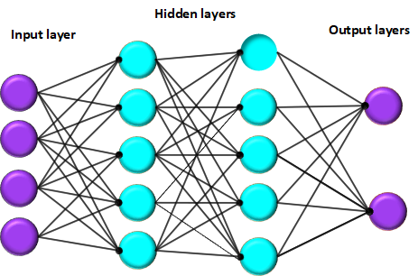

I developed a job recommendation system that utilizes the k-Nearest Neighbors (KNN) algorithm to determine the most relevant field based on a candidate's CV. The system efficiently scrapes and collects job postings from platforms like LinkedIn and Indeed, providing tailored job recommendations. Built with Streamlit, the project integrates machine learning and web scraping to enhance the job search experience.

This project involves implementing a Deep Neural Network (DNN) from scratch for image classification using the CIFAR-10 dataset. The model is optimized with the Adam algorithm to enhance learning efficiency. The process includes data preprocessing, network initialization, training with forward and backward propagation, and performance evaluation. Technologies used include Python, NumPy, Matplotlib, Scikit-learn, and PyTorch.
This project focuses on implementing a hate speech detection model using machine learning techniques. The process is structured into key stages, including data preprocessing, feature extraction, and model training. For the training phase, we utilized the Random Forest algorithm.

This project utilizes a Convolutional Neural Network (CNN) to classify car images accurately. The model analyzes each image and determines the corresponding tag for the car, enabling efficient and automated identification.

Dijkstra's algorithm is a fundamental graph-based algorithm used to find the shortest path from a source node to all other nodes in a weighted graph. It works by iteratively selecting the node with the smallest known distance, updating the distances of its neighboring nodes, and marking it as visited. This process continues until all nodes have been processed or the shortest path to a specific destination is found. The algorithm efficiently handles graphs with non-negative weights and is widely used in network routing, GPS navigation, and pathfinding in artificial intelligence.